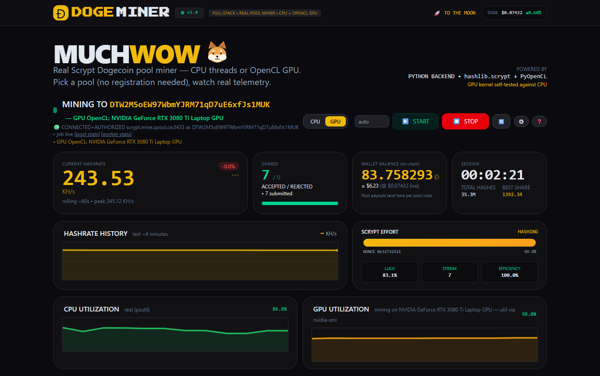
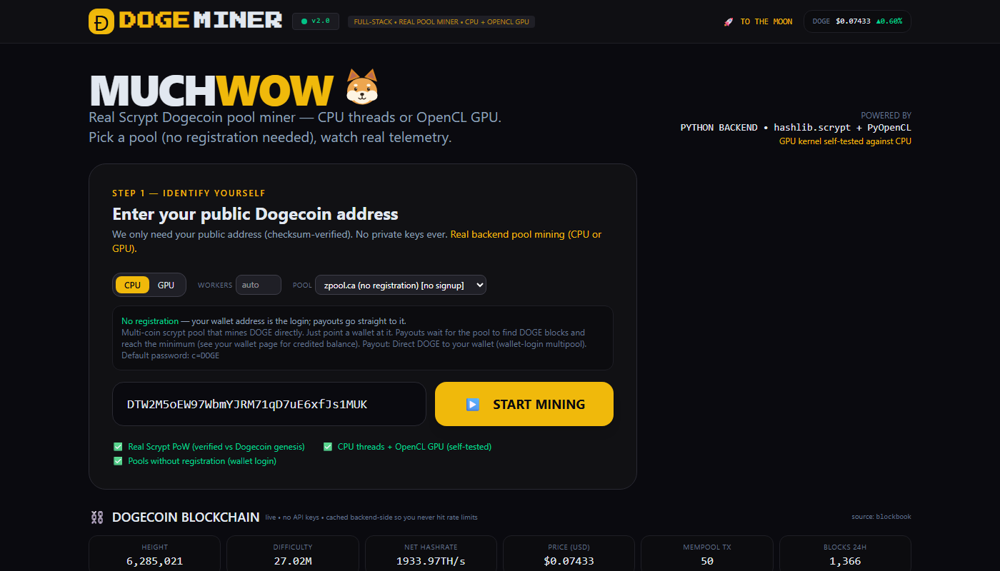
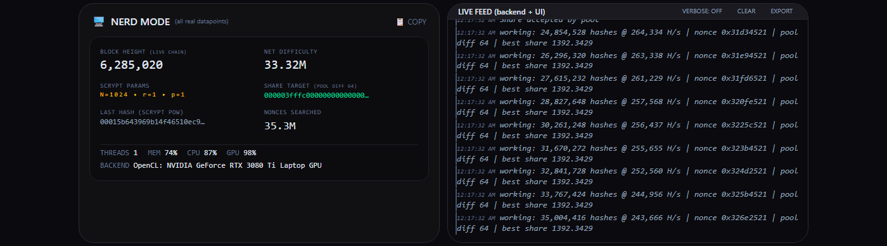
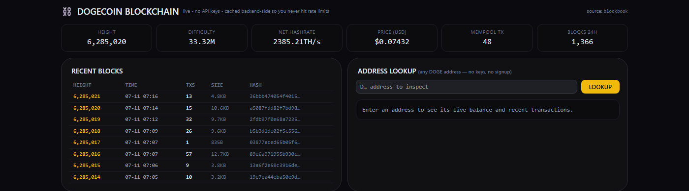

A full-stack, open-source Dogecoin pool miner with a live dashboard. Real Scrypt proof-of-work on your CPU or GPU, pools that need no registration, and blockchain telemetry with no API keys.
Clone or download the repo, then start it the way your OS likes. The app opens at localhost:8000 — and announces itself as doge.local over mDNS, so you (and any device on your network) can browse to it by name. Enter your Dogecoin address, press START MINING, done.
start.batThat's the click. It creates a virtualenv, installs dependencies (GPU extras included when possible) and launches the server.
./start.sh
Same deal: venv, dependencies, server. Python 3.10+ is all you need.
docker compose up --build
Single container, health-checked, env-configurable pool.
These are unedited captures of the app mining on a live pool (zpool) with an RTX 3080 Ti — real accepted shares, real blockchain data. Click any image for full size.




Plain-English answers, no jargon, no hype.
Your computer repeatedly hashes small "job" puzzles from the Dogecoin network. Finding a good enough hash is called a share — proof you did real work. Pools combine everyone's shares and split the block rewards proportionally.
Exactly one thing: a Dogecoin wallet address (free from any reputable wallet app). You paste the public address — the one you can safely share with anyone. This app never asks for private keys, passwords, or an email.
Solo-finding a Dogecoin block with a home computer is a lottery you won't win. Pools make earnings steady. The default pool here (zpool) needs zero registration — your wallet address is your login and payouts go straight to it.
No — and this page won't pretend otherwise. CPUs and GPUs earn tiny fractions of a DOGE compared to ASIC farms. This is for learning how mining really works, with real shares accepted by real pools. Treat any payout as a souvenir.
The code is fully open source (read every line on GitHub). It runs locally on your machine, sends only standard mining messages to the pool you choose, and touches nothing but a public address. MIT licensed — free, forever, no strings.
Try CPU first (works everywhere). If you have a gaming GPU, flip the toggle: the OpenCL engine is typically 50–100× faster. On a laptop RTX 3080 Ti: ~4 KH/s CPU vs ~270 KH/s GPU.
For the people who scroll straight to this section. Everything below is implemented in readable Python (~1 file per concern) and covered by 60+ unit tests.
Header serialization, the stratum per-word prevhash swap, little-endian PoW comparison and target math are pinned by unit tests against the Dogecoin genesis block and block 1 — the rebuilt genesis header byte-for-byte matches the chain, and its scrypt hash passes the genesis target.
The OpenCL kernel implements full scrypt — PBKDF2-HMAC-SHA256 → ROMix (1024× Salsa20/8 over a 128 KB scratchpad) → PBKDF2. It refuses to run unless it matches Python's hashlib.scrypt on random headers, and every share candidate is re-verified on the CPU before submission. No GPU? Clean, clearly-labeled CPU fallback.
hashlib.scrypt releases the GIL, so worker threads scale across cores (~3.8× on 4 threads). Header prefixes are cached per job, so each hash only packs a nonce and runs scrypt.
Auto-reconnect watchdog, set_extranonce and client.get_version handling, and a grace-period alarm for pools that silently ignore a bad username (looking at you, litecoinpool). Share counters come exclusively from real pool responses.
Height, difficulty, network hashrate, price, blocks, address & tx lookups from public providers (Blockbook → Blockchair → BlockCypher, CoinGecko for price) with server-side caching, automatic failover and labeled stale-serving. You never touch an API key or a rate limit.
Rolling hashrate, shares submitted/accepted/rejected, pool difficulty + exact share target, last PoW hash, best-share difficulty, statistical luck, CPU/MEM via psutil, GPU via nvidia-smi or OpenCL duty cycle, on-chain balance. Nothing on screen is simulated.
Stack: Python 3.10+ · FastAPI · stdlib hashlib.scrypt · PyOpenCL (optional) · a single-file frontend with a locally compiled Tailwind v4 stylesheet (no CDNs). Full details in the README.
Every preset was verified with a live stratum handshake. Or point it at any pool with the custom option.
| Pool | Registration | Login | Payout |
|---|---|---|---|
| zpool.ca (default) | none — just mine | your DOGE wallet address | DOGE direct to wallet |
| AikaPool | free account | username.worker | DOGE |
| litecoinpool.org | free account | username.worker | LTC (merged-mines DOGE) |
| F2Pool | free account | account.worker | LTC + DOGE (merged) |
| Custom | — | anything | your pool's rules |
Yes. MIT license — use it, fork it, learn from it, ship it in your own project. No trials, no telemetry-to-us, no "pro" tier. The mining pool you choose takes its own small fee (typically 0.5–1%), which goes to the pool, not to this project.
Pools pay for shares, not blocks. Every accepted share is proof of work at the pool's difficulty, and the pool splits its block rewards across all shares. Small hashrate = small (but real) slice.
Three ways: (1) the live feed shows the raw stratum wire traffic and per-worker nonce sweeps in verbose mode, (2) your pool's own stats page (linked in the header) shows shares credited to your address by the pool itself, (3) the PoW math is unit-tested against the Dogecoin genesis block — run the tests yourself.
A mining GPU draws serious power. For learning, run it for minutes, not months — the dashboard is just as instructive either way. This is an educational tool, not an investment.
{kind=link}
{kind=link}
{kind=link}
{kind=link}